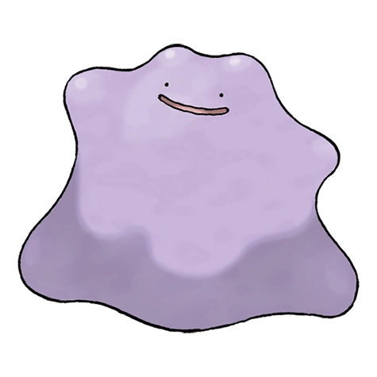

Назад
Дитто

Дитто — Покемон первого поколения под номером 132 в Покедекс. Обитает он в регионе Канто и относится к Нормальному типу. Дитто не эволюционирует. Дитто перестраивает свою клеточную структуру для трансформации тела в другие формы. Однако, если он пытается превратиться во что-то, полагаясь на свою память, этот Покемон ошибается в деталях.
Тип:
Нормальный
Эволюция
# 132 Дитто